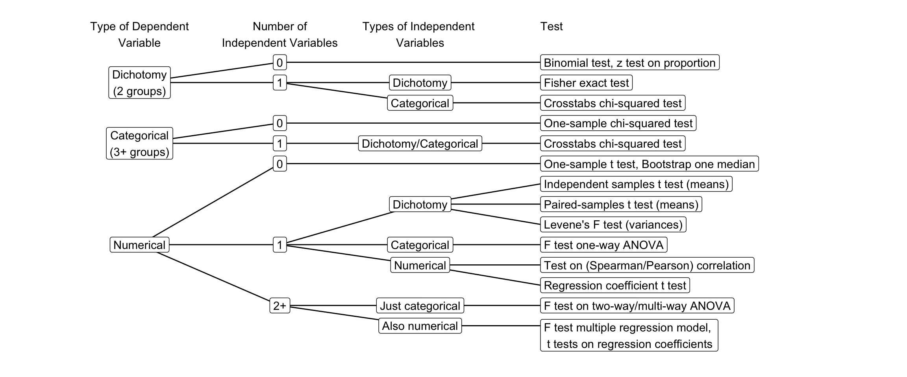

Appendix
Flow chart statistical test selection
The flow chart in Figure 1 helps you select the appropriate statistical test based on the type of dependent and independent variables.
It helps in the learning proces to think of different research designs for each test. Try to think of one for the independent samples t-test. Work your way from right to left to determine the type of variables and think of some research that conforms to this.
An interactive tool for test selection made by Matt Jackson-Wood can be found here.
All SPSS Tutorial Videos List
Chapter 2 Probability Models
- Video 2.4: Bootstrapping in SPSS.
- Video 2.5: Interpreting bootstrap results in SPSS.
- Video 2.2: Performing an exact test in SPSS.
- Video 2.3: Interpreting exact test results in SPSS.
Chapter 3 Estimating a Parameter
- Video 3.1: Setting the confidence level in SPSS.
Chapter 4 Hypothesis testing
- Video 1: A binomial test on a single proportion in SPSS.
- Video 3: A chi-squared test on a frequency distribution in SPSS.
- Video 2: A one-sample t test in SPSS.
Chapter 5 Moderation with Analysis of Variance (ANOVA)
- Video 5.2: One-way analysis of variance (ANOVA) in SPSS.
- Video 5.3: Two-way analysis of variance with moderation in SPSS.
- Video 5.4: Calculating eta2 from SPSS output.
Chapter 6 Regression Analysis And A Categorical Moderator
- Video 6.3: Executing and interpreting regression analysis in SPSS.
- Video 6.4: Creating dummy variables in SPSS.
- Video 6.5: Using dummy variables in a regression model in SPSS.
- Video 6.2: Checking assumptions for regression models in SPSS.
- Video 6.8: Creating categorical by numerical interaction predictors for regression in SPSS.
- ?vid-SPSSregcatmod: Estimating categorical by numerical moderation with regression in SPSS.
- Video 6.12: Representing moderation by regression lines in a scatterplot in SPSS.
- Video 6.11: Checking common support for a predictor at different moderator values in SPSS.
Chapter 7 Regression Analysis With A Numerical Moderator
- Video 7.2: Mean-centering variables for regression analysis in SPSS.
- Video 7.6: Regression lines for a numerical moderator in a scatterplot in SPSS.
- Video 7.3: Checking common support with a numerical moderator in SPSS.
Chapter 8 Regression Analysis And Confounders
- Video 8.2: Identifying confounders with regression in SPSS.
Chapter 9 Mediation with Regression Analysis
- Video 9.2: Estimating a single or parallel mediation model with PROCESS (Model 4).
- Video 9.3: Estimating a serial mediation model with PROCESS (Model 6).
- Video 9.4: Estimating a mediation model including covariates with PROCESS.
- Video 9.5: Estimating a path model in SPSS.
Appendix: Variance / Association
Formulating Statistical Hypotheses
A research hypothesis is a statement about the empirical world that can be tested against data. Communication scientists, for instance, may hypothesize that:
- a television station reaches half of all households in a country,
- media literacy is below a particular standard (for instance, 5.5 on a 10-point scale) among children,
- opinions about immigrants are not equally polarized among young and old voters,
- the celebrity endorsing a fundraising campaign makes a difference to people’s willingness to donate,
- more exposure to brand advertisements increases brand awareness,
- and so on.
As these examples illustrate, research hypotheses seldom refer to statistics such as means, proportions, variances, or correlations. Still, we need such statistics to test a hypothesis. The researcher must translate the hypothesis into a new hypothesis specifying a statistic in the population, for example, the population mean. The new hypothesis is called a statistical hypothesis.
Translating the research hypothesis into a statistical hypothesis is perhaps the most creative part of statistical analysis, which is just a fancy way of saying that it is difficult to give general guidelines stating which statistic fits which research hypothesis. All we can do is give some hints.
Research questions usually address shares, score levels, associations, or score variation. If a research question talks about how frequent some characteristic occurs (How many candies are yellow?) or which part has a particular characteristic (Which percentage of all candies are yellow?), we are dealing with one or two categorical variables. Here, we need a binomial, chi-squared, or exact test (see Figure 1).
If a research question asks how high a group scores or whether one group scores higher than another group, we are dealing with score levels. The variable of central interest usually is numerical (interval or ratio measurement level) and we are concerned with mean or median scores. There is a range of tests that we can apply, depending on the number of groups that we want to compare (one, two, three or more): t tests or analysis of variance.
Instead of comparing mean scores of groups, a research question about score levels can address associations between numerical variables, for example, Are heavier candies more sticky? Here, the score level on one variable (candy weight) is linked to the score level on another variable (candy stickiness). This is where we use correlations or regression analysis.
Finally, a research question may address the variation of numeric scores, for example, Does the weight of yellow candies vary more strongly than the weight of red candies? Variance is the statistic that we use to measure variation in numeric scores.
Mean and median: level
Research hypotheses that focus on the level of scores are usually best tested with the mean or another measure of central tendency such as the median value. For example, the hypothesis that media literacy is below a particular standard (e.g., 5.5 on a 10-point scale) among children refers to a level: the level of media literacy scores.
The hypothesis probably does not argue that all children have a media literacy score below 5.5. Instead, it means to say that the overall level is below this standard. The center of the distribution offers a good indication of the general score level.
For a numeric (interval or ratio measurement level) variable such as the 10-point scale in the example, the mean is a good measure of the distribution’s center. In this example, our statistical hypothesis would be that average media literacy score of all children in the population is (below) 5.5.
Testing one mean or median in SPSS
The one-sample t test in SPSS is explained in Video 2.
Variance: (dis)agreement
Although rare, research hypotheses may focus on the variation in scores rather than on score level. The hypothesis about polarization provides an example. Polarization means that we have scores well above the center and well below the center rather than all scores concentrated in the middle. If voters’ opinions about immigrants are strongly polarized, we have a lot of voters strongly in favour of admitting immigrants as well as many voters strongly opposed to admitting immigrants.
For a numeric variable, the variance or standard deviation—the latter is just the square root of the former—is the appropriate statistic to test a hypothesis about polarization. The research hypothesis concerns the variation of scores in two groups, for instance, young versus old voters. The statistical hypothesis would be that the variance in opinions in the population of young voters is different from the variance in the population of old voters.
Testing two variances in SPSS
Instructions
Exercises
Association: relations between characteristics
Finally, research hypotheses may address the relation between two or more variables. Relations between variables are at stake if the research hypothesis states or implies that one (type of) characteristic is related to another (type of) characteristic. The statistical name for a relation between variables is association.
Take, for example, an analysis of the effect of a celebrity endorser on the willingness to donate. Here, the endorser to whom a person is exposed (one characteristic) is related to this person’s willingness to donate (another characteristic). Another example: If exposure to the campaign increases willingness to donate, a person’s willingness to donate is positively related to this person’s exposure to the campaign.
Score level differences
Association comes in two related flavors: a difference in score level between groups or the predominance of particular combinations of scores on different variables.
The relation between the endorser’s identity and willingness to donate is an example of the first flavor. All people are confronted with one of the celebrities as endorser of the fund-raising campaign. This is captured by a categorical variable: the endorsing celebrity.
The categorical variable clusters people into groups: One group is confronted with Celebrity A, another group with Celebrity B, and so on. If the celebrity matters to the willingness to donate, the general level of donation willingness should be higher in the group exposed to one celebrity than in the group exposed to another celebrity.
Thus, we return to statistics needed to test research hypotheses about score levels, namely measures of central tendency. If willingness to donate is a numeric variable, we can use group means to test the association between endorsing celebrity (grouping variable) and willingness to donate (score variable). The statistical hypothesis would then be that group means are not equal in the population of all people.
If you closely inspect the choice diagram in Figure 4.17, you will see that we prefer to use a t distribution if we compare two different groups (independent-samples t test) or two repeated observations for the same group (paired-samples t test). By contrast, if we have three or more groups, we use analysis of variance with an F distribution.
Comparing means in SPSS
Instructions
For an instruction and exercises on one-way analysis of variance, see Video 5.2 and One-Way Analysis of Variance in SPSS. For two-way analysis of variance, see Two-Way Analysis of Variance in SPSS (instructions and exercises).
Exercises
Combinations of scores
The other flavor of association represents situations in which some combinations of scores on different variables are much more common than other combinations of scores.
Think of the hypothesis that brand awareness is related to exposure to advertisements for that brand. If the hypothesis is true, people with high exposure and high brand awareness should occur much more often than people with high exposure and low brand awareness or low exposure and high brand awareness.
The two variables here are exposure and brand awareness. One combination of scores on the two variables is high exposure combined with high brand awareness. This combination should be more common than high exposure combined with low brand awareness.
Measures of association are statistics that put a number to the pattern in combinations of scores. The exact statistic that we use depends on the measurement level of the variables. For numerical variables, measured at the interval or ratio level, we use Pearson’s correlation coefficient or the regression coefficient. For ordinal variables with quite a lot of different scores, we use Spearman’s rank correlation.
For categorical variables, measured at the nominal or ordinal level, chi-squared indicates whether variables are statistically associated. The larger chi-squared, the more likely we are to conclude that the variables are associated in the population. If variables are not associated, they are said to be statistically independent.
Several measures exist that express the strength of the association between two categorical variables. We use Phi and Cramer’s V (two nominal variables, symmetric association), Goodman & Kruskals tau (two nominal variables, asymmetric association), Kendalls tau-b (two categorical ordinal variables, symmetric association), and Somers’ d (two categorical ordinal variables, asymmetric association).
Testing associations in SPSS
Instructions
For regression analysis (instructions and exercises), see Regression Analysis in SPSS.
Exercises
Cohen’s d calculatons
These are the formulas for Cohen’s d for a one-sample t test, a paired-samples t test, and an independent-samples t test (they will be provided if needed):
\[\begin{equation}
d_{one_-sample} = \frac{M - \mu_0}{SD}
\end{equation}\]
\[\begin{equation}
d_{paired_-samples} = \frac{M_{diff} - \mu_{0_-diff}}{SD_{diff}}
\end{equation}\]
\[\begin{equation}
d_{independent_-samples} = \frac{2*t}{\sqrt(df)}
\end{equation}\]
Where:
\(M\) is the sample mean, \(\mu_0\) is the hypothesized population mean, and \(SD\) is the standard deviation in the sample,
\(M_{diff}\) is the difference between the two means in the sample, \(\mu_{0_-diff}\) is the hypothesized difference between the two means in the population mean, which is zero in case of a nil hypothesis, and \(SD_{diff}\) is the standard deviation of the difference in the sample,
\(t\) is the test statistic value and \(df\) is the number of degrees of freedom of the t test.
The sample outcome can be a single mean, for instance the average weight of candies, but it can also be the difference between two means, for example, the difference in colourfulness of yellow candies at the beginning and end of a time period. In the latter case, the standard deviation that we need is the standard deviation of colourfulness difference across all candies (Dependent samples). In the case of independent samples, such as average weight of red versus yellow candies, we need a special combined (pooled) standard deviation for yellow and red candy weight that is not reported by SPSS. Here, we use the t value and degrees of freedom to calculate Cohen’s d.
Obtaining Cohen’s d with SPSS
It is, relatively easy to calculate Cohen’s d by hand from SPSS output. Remember that we must divide the unstandardized effect by the standard deviation, though the latest versions of SPSS can also produce this in the output.
For a t test on one mean, the unstandardized effect is the difference between the sample mean and the hypothesized mean. SPSS reports this value in the column Mean Difference of the table with test results. Drop any negative signs! Divide it by the standard deviation of the variable as given in Table One-Sample Statistics.
In the example, Cohen’s d is 0.036 / 0.169 = 0.21. This is a weak effect.
For a paired-samples t test, the unstandardized effect size is reported in the column Mean in the Table Paired Samples Test. The standard deviation of the difference can be found in column Std. Deviation in the same table. Divide the first by the second, for instance, 1.880 / 1.033 = 1.82. This is a strong effect.
For an independent-samples t test, the situation is less fortuitous because SPSS does not report the pooled sample standard deviation that we need. The pooled sample standard deviation takes a sort of average of the outcome variable’s standard deviations in the two groups. As an approximation, we can calculate Cohen’s d as follows: Double the t value and divide it by the square root of the degrees of freedom.
In the example, Cohen’s d equals \((2 * 0.651) / \surd(18) = 0.31\). This is a moderate effect size.
Installing PROCESS
SPSS cannot apply statistical inference to indirect effects, so we use the PROCESS macro developed for this purpose (Hayes 2013). If correctly installed (see below), the macro can be used from within the SPSS Regression menu. Please note that you had better not paste the PROCESS commands to the SPSS syntax because it produces a lot of code that is difficult to understand. Instead, run the PROCESS command directly from the menu and manually add a comment to your SPSS syntax file reminding yourself of the model that you estimated with PROCESS.
Download the PROCESS macro and install the SPSS custom dialog file. Check the FAQ at the PROCESS website if installation is not successful. If PROCESS is successfully installed, it can be found in the Analyze > Regression menu.
Video 10 shows how to install the PROCESS macro. The installation is straightforward, but you need to know where to find the right files. The video shows two ways of installing the macro. We recommend the latter method, which is more reliable on different operating systems. This requires you to add the costum dialog through the SPSS menu Extensions > Utilities > Install Custom Dialog.
If installation does not work, it is always possible to use the University of Amsterdam’s virtual destop environment for students, to use SPSS. The PROCESS macro is already installed there. You can find the virtual desktop environment at apps.uva.nl. Instructions on how to use the virtual desktop environment can be found here.